つくり方 C01
動的HTMLスライドの
作り方
人に教える資料を、この品質で、速く。
見ている人が「美しい」と感じる理由を部品ごとにほどき、
同じ手で、同じ速さで作れるようにする。
1 なぜ美しい色4つ・書体2つ・段を揃える
2 動きの意図1.25秒・問い→答え→一枚
3 絵文字を焼かない
4 速さ台本が先。12分で1回分
この資料で何が変わるか
読む資料が、場面になる。
下の3枚が、この資料で言う「この品質」。講座で実際に使った画面。
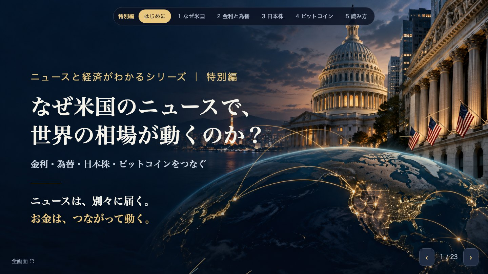
表紙絵が先に入り、言葉が後から浮かぶ。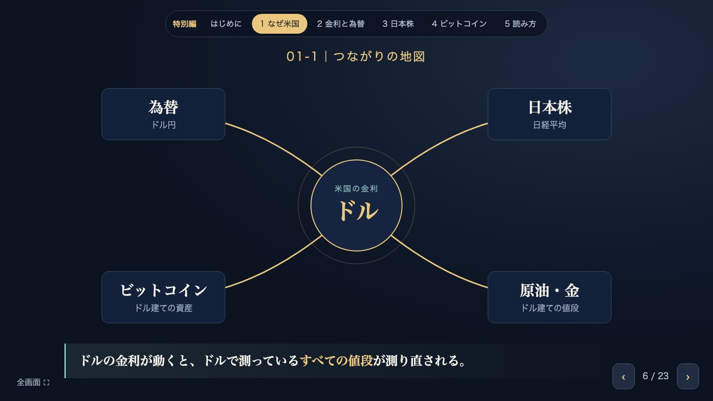
図解右矢印を押すたびに、線が1本ずつ伸びる。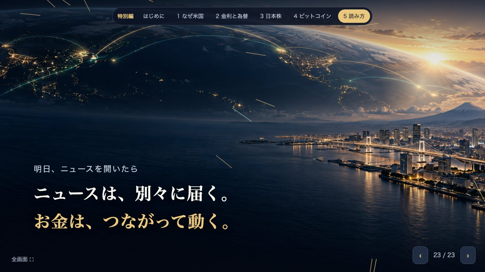
締め全画面の絵に、2行の言葉。ここで終わる。作り方は6章。なぜ美しいかから始めて、速く作る型で終わる。
01｜なぜ美しく見えるか
美しさは、
決めごとの数で決まる。
色は4つ、書体は2つ、舞台は1つ。増やさないから、揃う。
01-1｜色
色は4つだけ。面積の比で品が決まる。
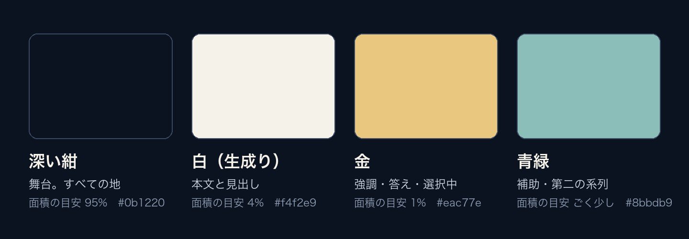
紺 95 ・ 白 4 ・ 金 1金色を増やすほど安っぽく見える。金色は「答え」と「いま選んでいるもの」にだけ使う。青緑は第二の系列と小さな札に限る。金色と青緑を同じ量で並べない。
地の紺は真っ黒にしない。わずかに青を残すと、写真が沈まない。
01-2｜書体
本文は明朝、数字と札はゴシック。
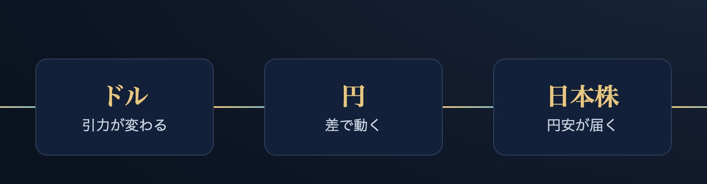
明朝 ＝ 語る文字見出しと決めの言葉。太さは600。細いと暗い地に沈む。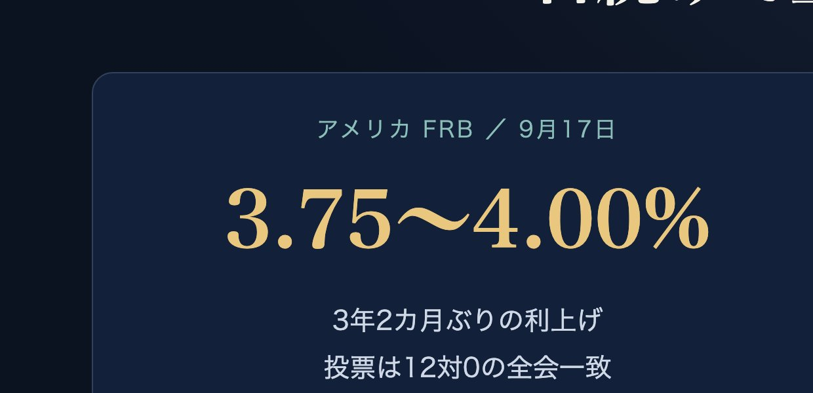
ゴシック ＝ 読む文字数字・単位・小さな見出し・札。同じ行で明朝と混ぜない。役割で使い分ける。語る所は明朝、読む所はゴシック。この一行を守るだけで印象が揃う。
01-3｜段
段を揃える。高さを変えない。
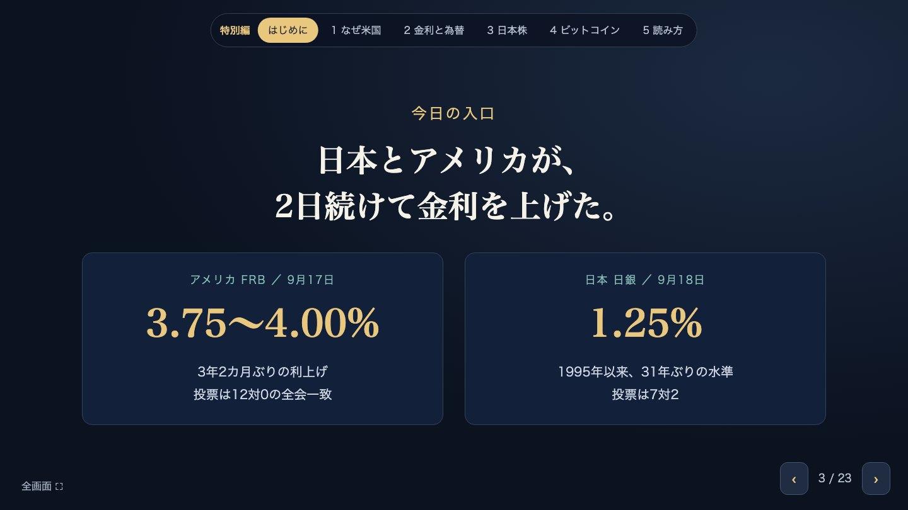
2枚のとき同じ枠、同じ余白、同じ高さ。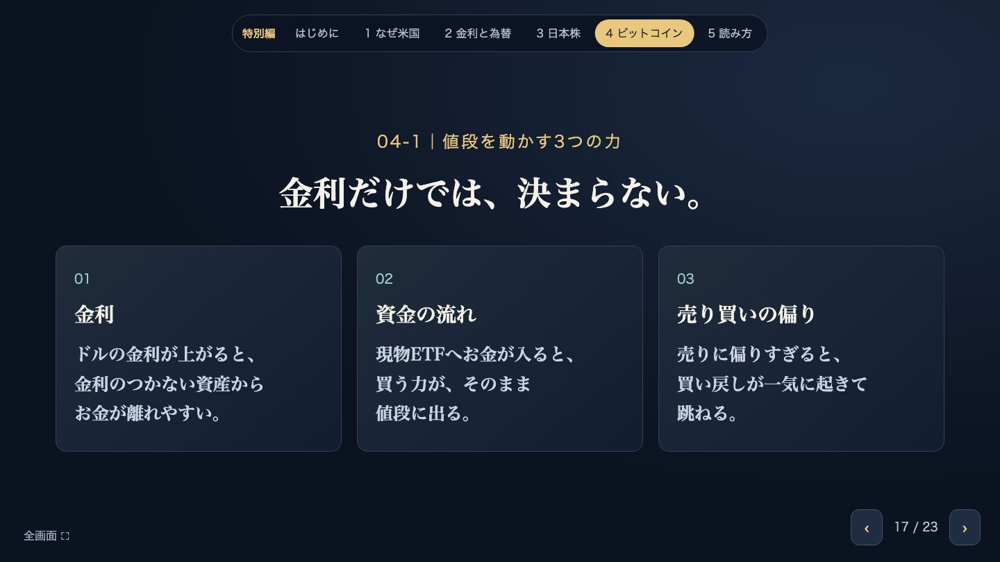
3枚のとき文の長さが違っても、箱の高さは変えない。枠の高さは、いちばん長い文で先に決める。
動きで高さが変わると目が追えない。段がずれた瞬間に「安く」見える。
01-4｜改行
改行は、意味のまとまりで切る。
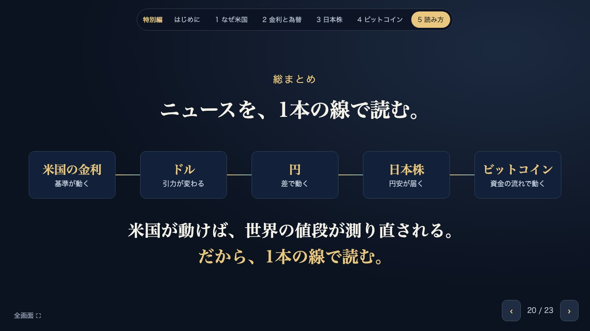
決めの言葉は2行上の行で状況、下の行で結論。語の途中で折り返さない。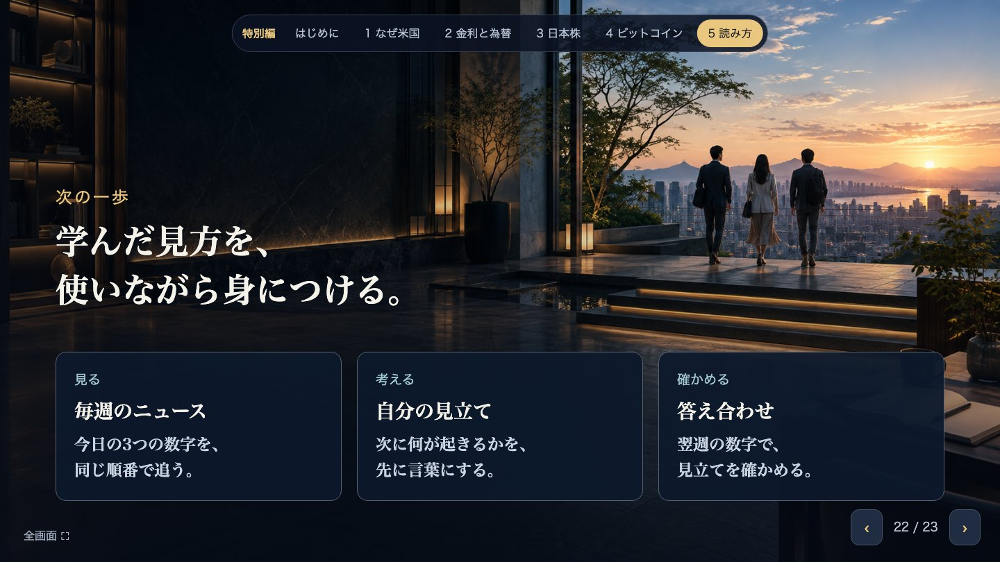
カードの文は2〜3行一文字だけの折り返しは必ず直す。見出しは2行まで。3行になるなら言葉を削る。1440×810の実画面で見る。端の座標を機械で測ると、はみ出しは見逃さない。
01-5｜舞台
画面は1枚の舞台。余白を恐れない。
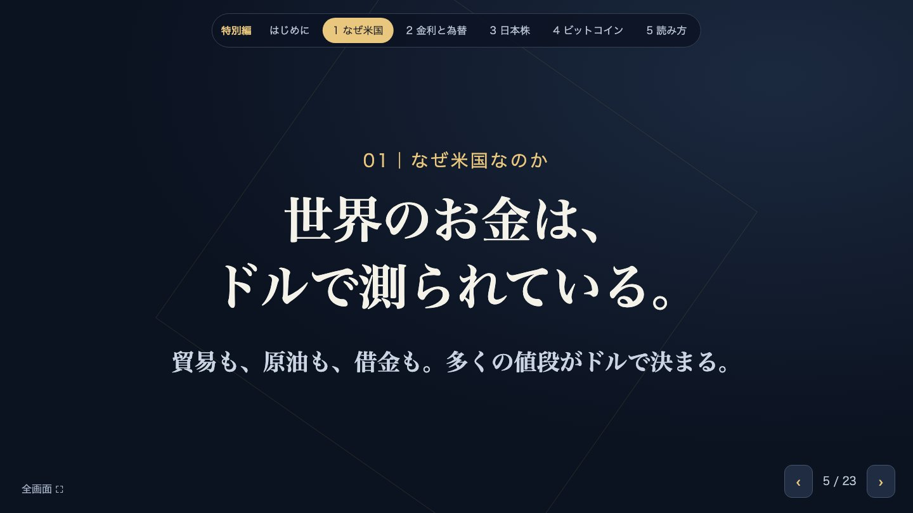
章の扉見出しと一文だけ。空いている所が、次の場面を待つ間になる。1440×810を固定して等比で拡大。どの画面でも折り返しが崩れない。
上に章、右下にページ、左下に全画面。それ以外のボタンは置かない。
02｜動きの意図
動きは、速さではなく、
順番。
切り替えは1.25秒。出てくる順番が、話す順番。
02-1｜切り替え
切り替えは、1.25秒のフェード。
実物。表紙 → 章の扉 → 締め、の順に1.25秒で重なって入れ替わる。右下の「もう一度」で繰り返せる。
前の絵が消えきる前に、次が重なる。速いと安く、遅いと眠い。1.25秒が答え。
02-2｜場面の山 まず実物。問い → 答え → 決めの一枚（右下の「もう一度」で繰り返し）
02-2｜場面の山
いま見た3枚を、ほどく。
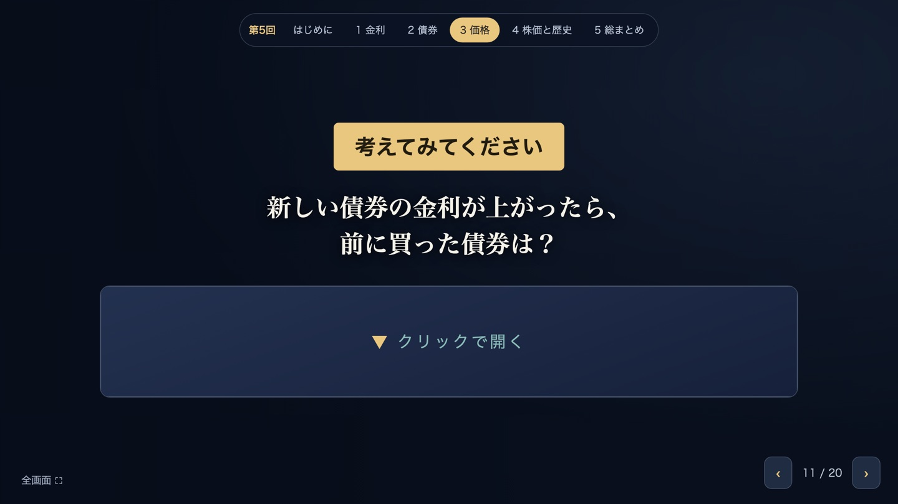
① 問い答えは閉じたまま。見ている人が考える間。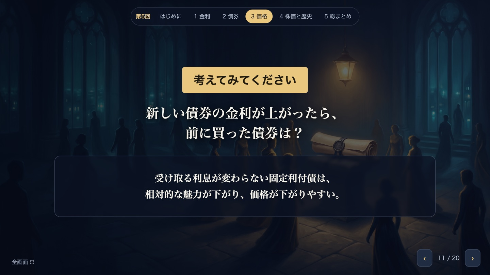
② 答え答えが出て、同じ絵が後ろに薄く浮かぶ。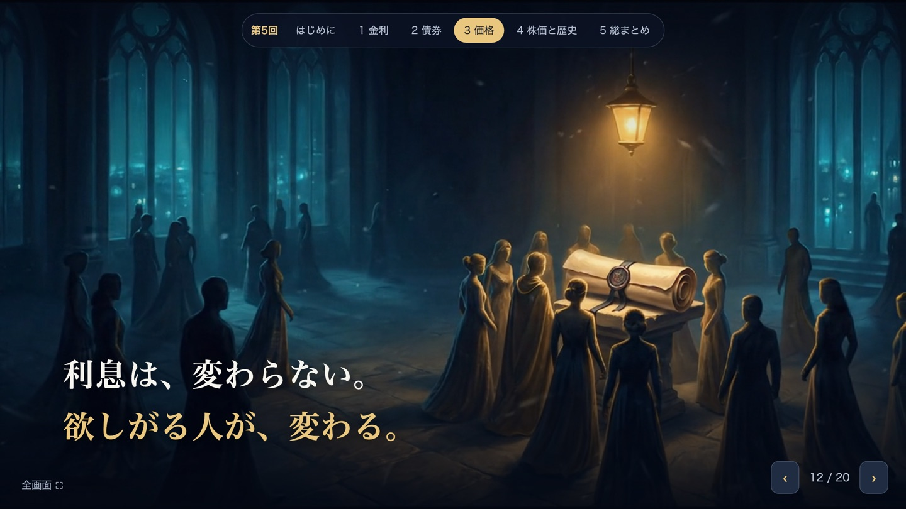
③ 決めの一枚1.25秒で同じ絵が全画面になり、2行の言葉が遅れて浮かぶ。絵は1枚を二度使う。見ている人の中で絵が「育つ」。期待 → 理解 → 余韻の順。
問いの開閉は講座向けの技法。教材動画や社内資料では外す。用途で選ぶ
02-3｜出す順番
出す順番は、話す順番。
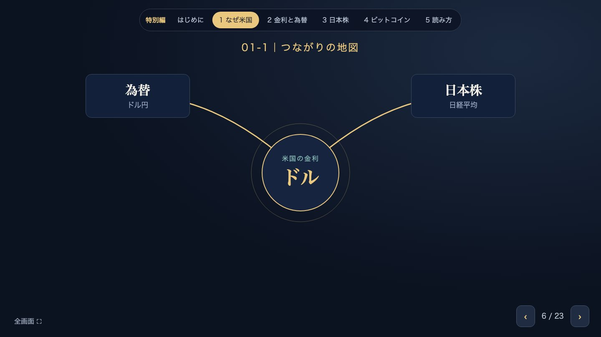
2本目まで右矢印を押すたびに1つ増える。全部を一度に出さない。全部使い切ったら、同じ右矢印で次のページへ。ページに入った瞬間は止まっている。最初の動きは、話し手が起こす。
戻って来たら最初から。途中の状態を残さない。
02-4｜最小の動き
静止画に、最小の動きを足す。
実物。絵は動かず、光の線だけが18〜23秒かけて流れている。
動かすのは1種類だけ。2種類動くと散る。線の起点は、絵の中で光が集まる点に置く。
02-5｜決めの言葉
決めの言葉は2行。強調は1語。
総まとめ上の行で状況、下の行で結論。締め全画面の絵の左下。強調するのは、いちばん言いたい語だけ。
決めの言葉は2行。強調は1ページに1語。増やすほど、どれも目立たなくなる。
03｜絵
絵に文字を焼かない。
文字は上に置く。
だから絵は差し替えられる。だから道具を選ばない。
03-1｜頼み方
絵は、この骨格で頼む。
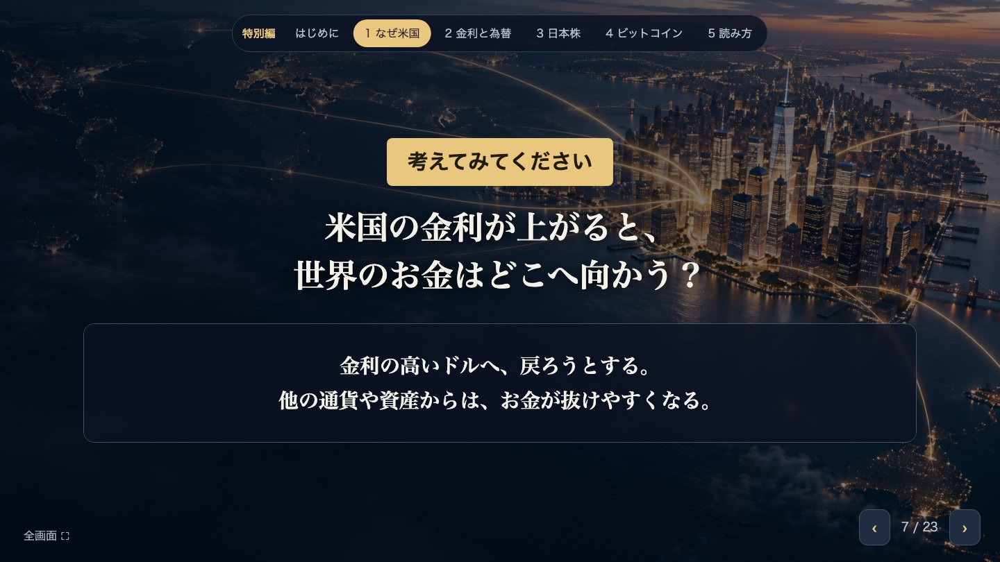
問い用上部中央を暗く空ける。言葉が中央に乗る。締め用左1/3を暗く空ける。言葉が左下に乗る。16:9、文字なし、ロゴなし、グラフなし。紺と金と青緑。人物なし。様式は言葉で書き切る（「さっきと同じ様式で」は通らない）。
Google Flow（Nano Banana Pro）で静止画は無料。2Kで書き出す。合わなければ GPT の ImageGen に切り替える
03-2｜道具と費用
無料の範囲で、絵も動画も作れる。
| 道具 | できること | 費用（実測） |
|---|
| Google Flow（Nano Banana Pro） | 静止画。2Kまで無料で書き出し | 消費なし |
| Google Flow（Veo 3.1 Lite） | 画像→動画 8秒・720p | 10クレジット／本 |
| Forge（LTX-2.5） | 画像→動画 最大20秒・1080p・音付き | 約10クレジット／秒 |
| HTML／SVG／CSS | 図・グラフ・光の線・段階表示 | 0。コードで書く |
2026-09-16〜10-04 の実測。Flow は「承認」を押した時点で消費される
03-3｜二度働く
1枚の絵が、二度働く。
① 問い答えは閉じたまま。② 開いた瞬間同じ絵が後ろに沈む。③ 全画面同じ絵が8秒だけ動き、最後のコマで止まる。
動画は1回再生して最後のコマで止める。ループは戻りで「カクッ」となる。
再生は切り替えの1.25秒が終わってから。
04｜速く作る
台本を先に決めて、
12分で組む。
書かない。決めて、流し込む。
04-1｜6歩
この順番で進むと、戻りが出ない。
正本
1中身の正本を決める告知文と台本。ここにない数字は使わない
公
6公開して直す絵の差し替えと直しは、公開後にページ番号で
速かった条件は3つ。正本が先にある・型が決まっている・検査を機械に任せる。どれかが欠けると時間は伸びる。
出所: 動画を手順だけで作る人の「台本を場面ごとに振り分けた表を先に作る」を、スライドに当てた
04-2｜部品
部品は8種類。これで講義1回分が埋まる。
つながりの地図中心から線が伸びる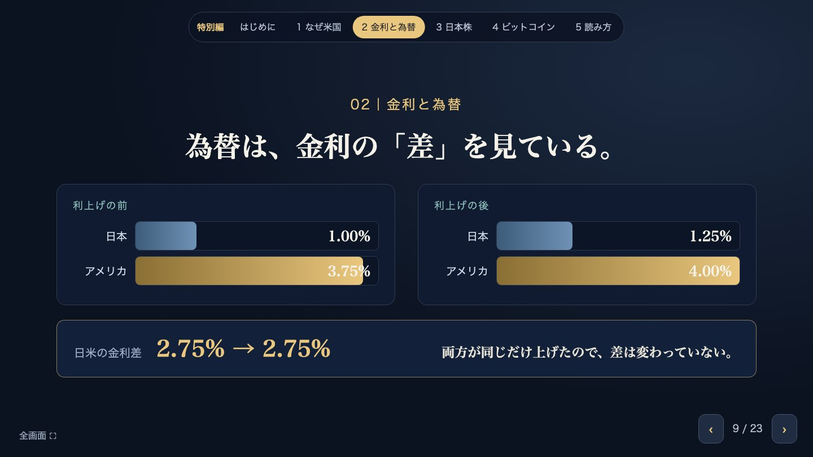
差の棒棒が伸びる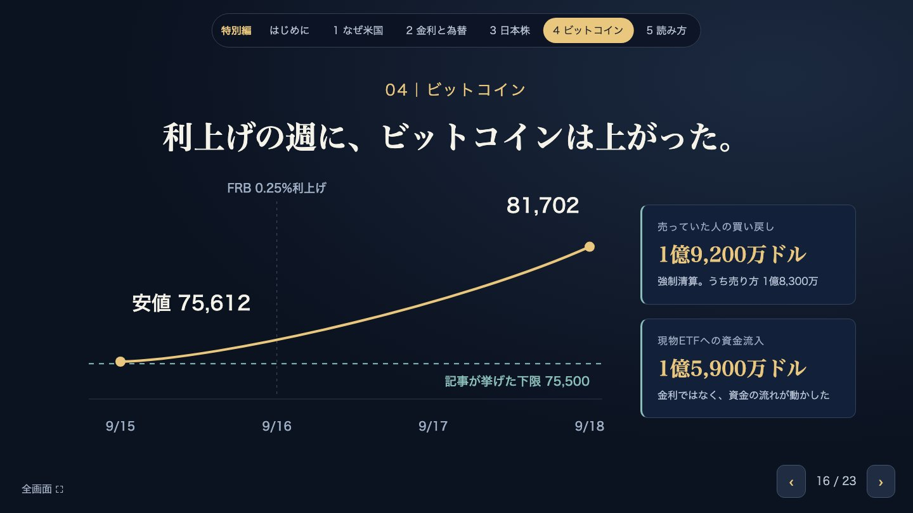
折れ線線が引かれる1本の線節が順につながる ほかに、段階表示のカード・流れ・対比・問い→答え→一枚。新しい見せ方が要るときだけ部品を足す。
04-3｜実測
10/1の講座資料は、この数字だった。
初稿12分開始から公開確認まで18:58 → 19:10
｜｜新しい絵をその場で作ると＋10分前後。絵を仮置きにして先に公開するのが速さの肝。
05｜動画にする
音を先に決めて、
画面を時刻に合わせる。
同じ部品が、そのまま動画になる。
05-1｜時刻で描く
時刻で状態を作ると、コマが撮れる。
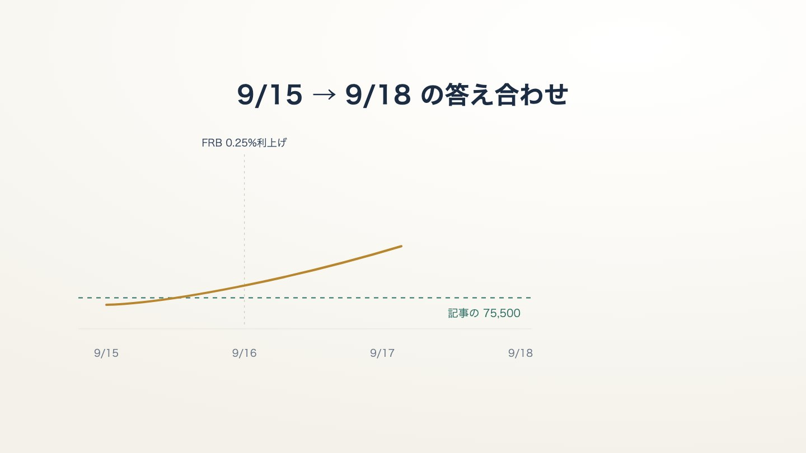
0.9秒線が引かれ始める。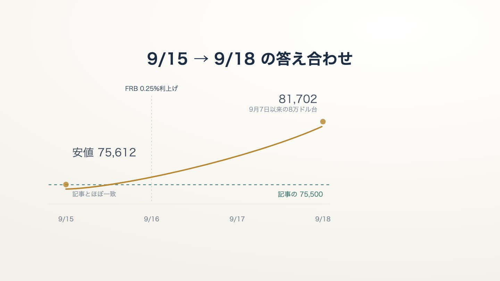
1.8秒線が伸びる。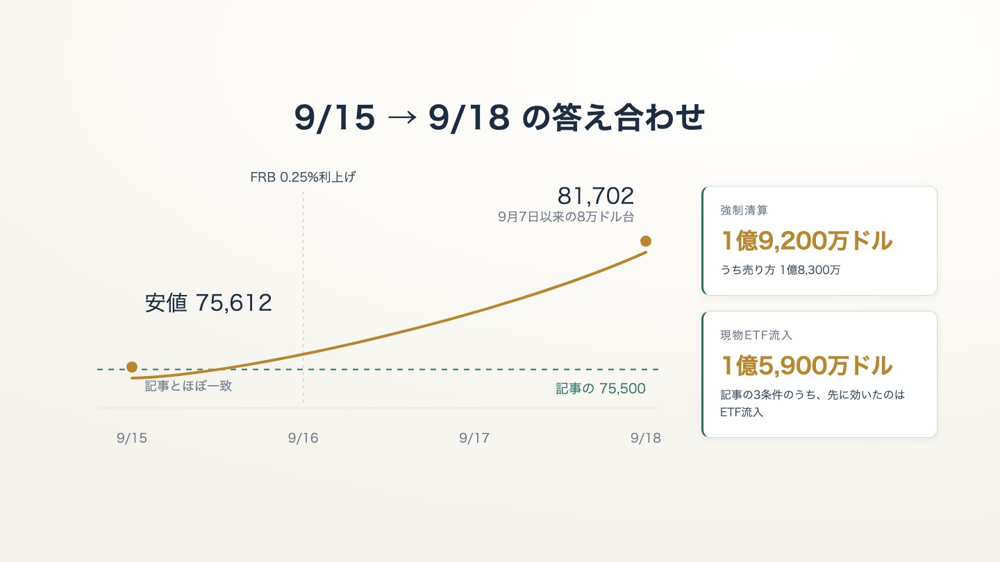
3.6秒点と数字が出る。どの瞬間でも同じ絵が出るので、1コマずつ撮って動画にできる。ブラウザを1つ常駐させて30コマ／秒。87秒＝2,597コマが約3分。
出し方は3つ。全画面で差し込む動画、背景を抜いて重ねる動画、動かない所の静止画。
ナレーション付きの教材は、音を先に確定し、各行の出る時刻をナレーションの開始時刻に合わせる
06-1｜効いた言葉
違和感を、そのまま言葉にする。
| 場面 | 前 | 言った言葉 | 後 |
|---|
| 重し | 横の目盛りが伸びる | 「重しがずしんと乗る感じで」 | 鉄の分銅が落ち、板が沈む |
| 価格 | 数字が変わるだけ | 「前半と似ている」 | 買い手の列と値札 |
| 光の線 | 画面の中央から | 「画像の光の中心から始めて」 | 起点を光の点に合わせた |
| 問いの後 | そのまま次へ | 「開いた後が止まらない」 | 決めの一枚を1枚追加 |
| 動画 | 4秒ループ | 「船が戻ってカクッとなる」 | 8秒1回再生、最後で静止 |
どれも「絵を直せ」ではなく、見て感じたことをそのまま言った
06-2｜言い方
短い言葉ほど、よく効く。
感覚「違和感がある」
統一「同じ演出に」
禁止「これはいらない」
返す側は「変えた点」「確認したこと」「残っている確認」の3つで返す
06-3｜出す前に
公開の前に当てる。
- 1440×810で全ページ、はみ出しなし
- 改行は意味のまとまり。一文字折り返しなし
- 強調（金色）は1ページに1語
- 動くものは1種類
- 右矢印だけで最後まで進む
- 最初の画面は止まっている
- 絵に文字が焼かれていない
- 動画は切り替え後に再生、最後で静止
- 説明文に操作の説明がない
- 公開URLで素材が全部読める
つくり方 C01
この資料を渡せば、
同じ品質で、速く作れる。
色は4つ、書体は2つ、舞台は1つ。切り替えは1.25秒。問い、答え、決めの一枚。絵に文字は焼かない。台本が先。
編集元: AITrendUniverse/manuals/slide-making/source.json ｜ 実例: 講座資料（第5回・第6回）と、ニュース・教材動画の書き出し